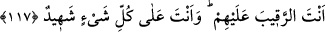

vücudundaki kılların her birinin dibinden kan fışkırır. Bu söz zahiren Hz. İsa’ya hitaben
söylenmiş olsa da aslında onun küfre düşen ümmetinedir. Çünkü sünnetullah gereği,
Allah Teâlâ, kıyâmet gününde kâfirlerle ne konuşacak, ne de onların yüzüne bakacaktır!
Sanki “O zaman Hz. Îsâ ne söyleyecek”? diye sorulmuş cevap olarak da şöyle
buyurulmuştur. “o şöyle söyledi: “Hâşâ! Seni tenzih ederim.” Böyle bir söz söylemiş
olmamdan; ya da böyle bir sözün söylenmiş olmasından seni sana layık olacak şekilde
tenzih ederim. “Hakkım olmayan şeyi söylemek bana yakışmaz.” Bu, benim için doğru
olmaz ve bana gerekmez. “Hem ben” bu sözü “söylemiş olsaydım elbette Sen onu
bilirdin.” Çünkü Sen böyle bir sözü benim içimde “kün, ol” emrinle var edip
yaratmadan söylemeye gücüm yetmez. Böyle bir sözün benden sâdır olması kesinlikle
senin bunu bilmeni gerektirir. Eğer sen bunu bilmiyorsan, kesinlikle benden böyle bir
söz de sâdır olmamış demektir.
“Sen benim içimdekini bilirsin.” Yani benim açığa vurduklarımı bildiğin gibi içimde
gizlediklerimi de bilirsin. “Halbuki ben Senin zâtında olanı bilmem” Yani ben senin
gizlediklerini bilmem.
Âyette Allah’ın ilminden gizledikleri “nefsinde olan” diye ifade edilmiştir. Bunun
sebebi, hemen öncesindeki “nefsimde olanı bilirsin” cümlesi ile beraber gelmesinden
dolayı ona şeklen benzemesi içindir. İnsanın bilgilerinin gizli olması, şekillerinin orada
resmedilmiş olması mânâsınadır. Oysa Allah Teâlâ’nın ilmi huzûrîdir. O’nun zatında
bilinen şeylerin sureti, hiç kaybolmaz. Onun için Allah’a nisbet edilen “nefs”i, ilk
olarak akla geldiği şekliyle anlamak doğru olmaz.
“Gizlilikleri” önceden olanları ve olacakları “hakkıyla bilen yalnızca sensin.”
117. Ben onlara, ancak bana emrettiğini söyledim. Benim de, sizin de Rabb’iniz
olan Allah’a kulluk edin, dedim. İçlerinde bulunduğum müddetçe onlara şâhit idim.
Fakat sen beni vefât ettirince onları gözetleyen yalnız sen oldun. Sen her şeyi
hakkıyla görensin.
“Ben onlara, ancak bana emrettiğini söyledim.” Âyette “bana emrettiğin şeyleri
emrettim” ifadesinin yerine “bana emrettiklerini söyledim” ifadesinin tercih edilmesi,
edep kaidelerine ve önceki âyette sorulan sorunun üslubuna uygun olması içindir.
“Benim de, sizin de Rabb’iniz olan Allah’a kulluk edin, dedim.”
İçlerinde bulunduğum müddetçe onlara şâhit idim. Yani, onları murakâbe eder,
durumlarını denetler, onları senin emirlerine uygun davranmaya teşvik eder, senin
emirlerine karşı gelip aykırı davranmaktan men ederdim. Ya da, ben onların hallerine